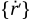
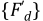

When a structure is rotating, inertial forces and moments are observed. Their expressions and physical meanings are different depending on which reference frame is chosen: a rotating reference frame (O'X'Y'Z') (attached to the body) or a stationary reference frame, the global Cartesian (OXYZ) – see Figure 14.4: Reference Frames.
By default (no CORIOLIS command), the systems equations are solved in the rotating reference frame. In a static linear analysis, the centrifugal load is accounted for, while in a static nonlinear analysis, centrifugal load as well as all spin softening effects are included. In a nonlinear transient analysis all nonlinear inertia forces are also added.
Some of these nonlinear inertia terms can be linearized to support linear analyses of a rotating structure (CORIOLIS command). This is the case for the Coriolis and spin softening effects in the rotating reference frame and for the gyroscopic effect in the stationary reference frame.
Based on settings defined with the CORIOLIS command, a stationary or rotating reference frame problem is resolved. The resulting equations are different and are addressed below.
See the Notes section of the CORIOLIS command for a list of supported elements.
Synchronous and asynchronous forces are discussed in Harmonic Analysis with Rotating Forces on Rotating Structures.
In Figure 14.4: Reference Frames above, a part or component is rotating at angular velocity
{ω}, with components ωx, ωy, and
ωz defined in the stationary reference frame. The position of point
P with reference to (OXYZ) is {r}, while its position with reference to the rotating frame of
reference (  ) is , and:
) is , and:
(14–31) |
The velocity of point P as observed in the stationary and rotating frames is defined as:
(14–32) |
and
(14–33) |
The velocity of point P observed in the stationary frame can be expressed as:
(14–34) |
where: 
The translational accelerations of point P as observed in the stationary and rotating frames of reference:
(14–35) |
and
(14–36) |
By substituting Equation 14–34 into Equation 14–35 and using Equation 14–36, we obtain:
(14–37) |
where:
We assume that the origin of the rotating system is fixed, so that:
(14–38) |
By substituting Equation 14–38 into Equation 14–37,
 | (14–39) |
The second term , is the rotational acceleration and leads to a load (sometimes called the Euler force – see Acceleration Effect)
The third term is the centrifugal acceleration (see Guo et al.([365]) which leads to the centrifugal load (Acceleration Effect) and the spin softening effect.
The last term leads to the Coriolis force.
By applying virtual work from the d'Alembert force, the contribution of the first term {a r} (Equation 14–39) to the virtual work introduces the mass matrix of the element (Guo et al.([365])).
(14–40) |
where:
| [Me] = element mass matrix |
| [N] = shape function matrix |
| ρ = element density |
The Coriolis matrix is deduced from the last term of Equation 14–39 (Guo et al.([365])):
(14–41) |
where:
| [Ge] = element Coriolis damping matrix |
and thus [Ge] are skew symmetric matrices.
The governing dynamics equation of motion in a rotating reference frame can be written as,
(14–42) |
where:
| n = number of elements |
| [K] = global stiffness matrix |
| [KSP] = global stiffness matrix due to spin softening |
| {F} = load vector (sum of external and centrifugal loads) |

Suppose a structure is spinning around an axis Δ. If a rotation about an axis perpendicular to Δ is applied to the structure, then a reaction moment appears. It is called the gyroscopic moment. Its axis is perpendicular to both the spinning axis Δ and the applied rotation axis.
The gyroscopic effect is thus coupling rotational degrees of freedom which are perpendicular to the spinning axis.
Let us consider the spinning axis is along X so:
The gyroscopic finite element matrix is calculated from the kinetic energy due to the inertia forces.
The kinetic energy for lumped mass and beam element (Nelson and McVaugh([363])) is detailed in Kinetic Energy for the Gyroscopic Matrix Calculation of Lumped Mass and Legacy Beam Element below.
The general expression of the kinetic energy used for the development of the gyroscopic matrices for all other elements (Geradin and Kill [381]) is presented in General Expression of the Kinetic Energy for the Gyroscopic Matrix Calculation
Both mass and beam are supposed to be axisymmetric around the spinning axis. The spinning axis is along one of the principal axis of inertia for lumped mass. For the beam, it is along the length.
Two reference frames are used (see Figure 14.4: Reference Frames) (OXYZ) which is stationary and which is attached to the cross-section with axis normal to it.
 is defined using 3 successive rotations:
is defined using 3 successive rotations:
θz around Z axis to give
θy around axis to give
θx around axis to give
Hence for small rotations θy and θz, the instantaneous angular velocity is:
(14–44) |
For a lumped mass, considering only second order terms, kinetic energy is obtained using the instantaneous angular velocity vector in Equation 14–44.
(14–45)
where:
m = mass Id = diametral inertia Ip = polar inertia The first two terms contribute to the mass matrix of the element and the last term gives the gyroscopic matrix.
The beam element is considered as an infinite number of lumped masses. The gyroscopic kinetic energy of the element is obtained by integrating the last term of Equation 14–45 along the length of the beam:
(14–46)
where:
ρ = density Ix = moment of inertia normal to x L = length of the beam element Gyroscopic matrix is deduced based on the element shape functions. (See PIPE288).
In a linear approach, the relation between displacements in the stationary reference frame (0XYZ) and displacements in the rotating reference frame (0X’Y’Z’) can be written as:
(14–48) |
where:
| {r'} = the displacement vector in the rotating reference frame |
| [R] = the transformation matrix |
| {r} = the displacement vector in the stationary reference frame |
Differentiating Equation 14–48 with respect to time, one obtains the expression for the velocity vector:
(14–49) |
where:
|  = the velocity vector in the rotating reference frame |
 = the velocity vector in the stationary reference frame = the velocity vector in the stationary reference frame |
| = the rotational matrix, as defined in Equation 14–41 |
If structural damping is present in the rotating structure (proportional damping for example) or if there is localized viscous damping (as in a damper), damping forces in the rotating reference frame may be expressed as:
(14–50) |
where:
|  = the damping forces in the rotating reference frame |
| [C] = the damping matrix |
To obtain the damping forces in the stationary reference frame, first apply the transformation of Equation 14–48:
(14–51) |
where:
| {Fd}= the damping forces in the stationary reference frame. |
Then replace Equation 14–49 in Equation 14–50, the resulting expression in Equation 14–51 yields:
(14–52) |
If the damping is isotropic (implementation assumption):
(14–53) |
Where [B] is the rotating damping matrix:
(14–54) |
In the particular case of spring-damper element (COMBIN14), general joint (MPC184), and stiffness matrix (MATRIX27), the following average equation is used:
(14–55) |
[B] from Equation 14–54 and Equation 14–55 is a non-symmetric matrix which will modify the apparent stiffness of the structure.
In a quasi-static analysis, the gyroscopic effect is introduced as a load vector:
(14–56) |
where
 = gyroscopic force = gyroscopic force |
 = nodal velocity vector (input using the IC or
ICROTATE command) = nodal velocity vector (input using the IC or
ICROTATE command) |
In this case, an additional centrifugal load is introduced based on the rotational velocity and rotational velocity axis defined with ICROTATE. The translational acceleration used is similar to the third term of Equation 14–39.